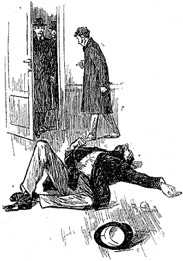
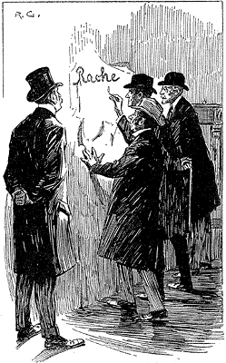

I confess that I was considerably startled by this fresh proof of the practical nature of my companion's theories. My respect for his power of analysis increased wondrously. There still remained some lurking suspicion in my mind, however, that the whole thing was a prearranged episode, intended to dazzle me, though what earthly object he could have in taking me in was past my comprehension. When I looked at him, he had finished reading the note, and his eyes had assumed the vacant, lack-lustre expression which showed mental abstraction.
"How in the world did you deduce that?" I asked.
"Deduce what?" said he, petulantly.
"Why, that he was a retired sergeant of Marines."
"I have no time for trifles," he answered, brusquely; then with a smile, "Excuse my rudeness. You broke the thread of my thoughts; but perhaps it is as well. So you actually were not able to see that that man was a sergeant of Marines?"
"No, indeed."
"It was easier to know it than to explain why I know it. If you were asked to prove that two and two made four, you might find some difficulty, and yet you are quite sure of the fact. Even across the street I could see a great blue anchor tattooed on the back of the fellow's hand. That smacked of the sea. He had a military carriage, however, and regulation side whiskers. There we have the marine. He was a man with some amount of self-importance and a certain air of command. You must have observed the way in which he held his head and swung his cane. A steady, respectable, middle-aged man, too, on the face of him—all facts which led me to believe that he had been a sergeant."
"Wonderful!" I ejaculated.
"Commonplace," said Holmes, though I thought from his expression that he was pleased at my evident surprise and admiration. "I said just now that there were no criminals. It appears that I am wrong—look at this!" He threw me over the note which the commissionaire had brought.
"Why," I cried, as I cast my eye over it, "this is terrible!"
"It does seem to be a little out of the common," he remarked, calmly. "Would you mind reading it to me aloud?"
This is the letter which I read to him, —
"My dear Mr. Sherlock Holmes, —
"There has been a bad business during the night at 3, Lauriston Gardens, off the Brixton Road. Our man on the beat saw a light there about two in the morning, and as the house was an empty one, suspected that something was amiss. He found the door open, and in the front room, which is bare of furniture, discovered the body of a gentleman, well dressed, and having cards in his pocket bearing the name of 'Enoch J. Drebber, Cleveland, Ohio, U.S.A.' There had been no robbery, nor is there any evidence as to how the man met his death. There are marks of blood in the room, but there is no wound upon his person. We are at a loss as to how he came into the empty house; indeed, the whole affair is a puzzler. If you can come round to the house any time before twelve, you will find me there. I have left everything in statu quo until I hear from you. If you are unable to come, I shall give you fuller details, and would esteem it a great kindness if you would favour me with your opinion.
"Yours faithfully,
" Tobias Gregson."
"Gregson is the smartest of the Scotland Yarders," my friend remarked; "he and Lestrade are the pick of a bad lot. They are both quick and energetic, but conventional—shockingly so. They have their knives into one another, too. They are as jealous as a pair of professional beauties. There will be some fun over this case if they are both put upon the scent."
I was amazed at the calm way in which he rippled on. "Surely there is not a moment to be lost," I cried; "shall I go and order you a cab?"
"I'm not sure about whether I shall go. I am the most incurably lazy devil that ever stood in shoe leather—that is, when the fit is on me, for I can be spry enough at times."
"Why, it is just such a chance as you have been longing for."
"My dear fellow, what does it matter to me? Supposing I unravel the whole matter, you may be sure that Gregson, Lestrade, and Co. will pocket all the credit. That comes of being an unofficial personage."
"But he begs you to help him."
"Yes. He knows that I am his superior, and acknowledges it to me; but he would cut his tongue out before he would own it to any third person. However, we may as well go and have a look. I shall work it out on my own hook. I may have a laugh at them, if I have nothing else. Come on!"
He hustled on his overcoat, and bustled about in a way that showed that an energetic fit had superseded the apathetic one.
"Get your hat," he said.
"You wish me to come?"
"Yes, if you have nothing better to do." A minute later we were both in a hansom, driving furiously for the Brixton Road.
It was a foggy, cloudy morning, and a dun-coloured veil hung over the house-tops, looking like the reflection of the mud-coloured streets beneath. My companion was in the best of spirits, and prattled away about Cremona fiddles, and the difference between a Stradivarius and an Amati. As for myself, I was silent, for the dull weather and the melancholy business upon which we were engaged, depressed my spirits.
"You don't seem to give much thought to the matter in hand," I said at last, interrupting Holmes' musical disquisition.
"No data yet," he answered. "It is a capital mistake to theorize before you have all the evidence. It biases the judgment."
"You will have your data soon," I remarked, pointing with my finger; "this is the Brixton Road, and that is the house, if I am not very much mistaken."
"So it is. Stop, driver, stop!" We were still a hundred yards or so from it, but he insisted upon our alighting, and we finished our journey upon foot.
Number 3, Lauriston Gardens wore an ill-omened and minatory look. It was one of four which stood back some little way from the street, two being occupied and two empty. The latter looked out with three tiers of vacant melancholy windows, which were blank and dreary, save that here and there a "To Let" card had developed like a cataract upon the bleared panes. A small garden sprinkled over with a scattered eruption of sickly plants separated each of these houses from the street, and was traversed by a narrow pathway, yellowish in colour, and consisting apparently of a mixture of clay and of gravel. The whole place was very sloppy from the rain which had fallen through the night. The garden was bounded by a three-foot brick wall with a fringe of wood rails upon the top, and against this wall was leaning a stalwart police constable, surrounded by a small knot of loafers, who craned their necks and strained their eyes in the vain hope of catching some glimpse of the proceedings within.
I had imagined that Sherlock Holmes would at once have hurried into the house and plunged into a study of the mystery. Nothing appeared to be further from his intention. With an air of nonchalance which, under the circumstances, seemed to me to border upon affectation, he lounged up and down the pavement, and gazed vacantly at the ground, the sky, the opposite houses and the line of railings. Having finished his scrutiny, he proceeded slowly down the path, or rather down the fringe of grass which flanked the path, keeping his eyes riveted upon the ground. Twice he stopped, and once I saw him smile, and heard him utter an exclamation of satisfaction. There were many marks of footsteps upon the wet clayey soil; but since the police had been coming and going over it, I was unable to see how my companion could hope to learn anything from it. Still I had had such extraordinary evidence of the quickness of his perceptive faculties, that I had no doubt that he could see a great deal which was hidden from me.
At the door of the house we were met by a tall, white-faced, flaxen-haired man, with a notebook in his hand, who rushed forward and wrung my companion's hand with effusion. "It is indeed kind of you to come," he said, "I have had everything left untouched."
"Except that!" my friend answered, pointing at the pathway. "If a herd of buffaloes had passed along there could not be a greater mess. No doubt, however, you had drawn your own conclusions, Gregson, before you permitted this."
"I have had so much to do inside the house," the detective said evasively. "My colleague, Mr. Lestrade, is here. I had relied upon him to look after this."
Holmes glanced at me and raised his eyebrows sardonically. "With two such men as yourself and Lestrade upon the ground, there will not be much for a third party to find out," he said.
Gregson rubbed his hands in a self-satisfied way. "I think we have done all that can be done," he answered; "it's a queer case though, and I knew your taste for such things."
"You did not come here in a cab?" asked Sherlock Holmes.
"No, sir."
"Nor Lestrade?"
"No, sir."
"Then let us go and look at the room." With, which inconsequent remark he strode on into the house, followed by Gregson, whose features expressed his astonishment.
A short passage, bare-planked and dusty, led to the kitchen and offices. Two doors opened out of it to the left and to the right. One of these had obviously been closed for many weeks. The other belonged to the dining-room, which was the apartment in which the mysterious affair had occurred. Holmes walked in, and I followed him with that subdued feeling at my heart which the presence of death inspires.
It was a large square room, looking all the larger from the absence of all furniture. A vulgar flaring paper adorned the walls, but it was blotched in places with mildew; and here and there great strips had become detached and hung down, exposing the yellow plaster beneath. Opposite the door was a showy fireplace, surmounted by a mantelpiece of imitation white marble. On one corner of this was stuck the stump of a red wax candle. The solitary window was so dirty that the light was hazy and uncertain, giving a dull grey tinge to everything, which was intensified by the thick layer of dust which coated the whole apartment.
All these details I observed afterwards. At present my attention was centred upon the single, grim, motionless figure which lay stretched upon the boards, with vacant, sightless eyes staring up at the discoloured ceiling. It was that of a man about forty-three or forty-four years of age, middle-sized, broad-shouldered, with crisp curling black hair, and a short, stubbly beard. He was dressed in a heavy broadcloth frock coat and waistcoat, with light-coloured trousers, and immaculate collar and cuffs. A top hat, well brushed and trim, was placed upon the floor beside him. His hands were clenched and his arms thrown abroad, while his lower limbs were interlocked, as though his death struggle had been a grievous one. On his rigid face there stood an expression of horror, and as it seemed to me, of hatred, such as I have never seen upon human features. This malignant and terrible contortion, combined with the low forehead, blunt nose, and prognathous jaw, gave the dead man a singularly simious and ape-like appearance, which was increased by his writhing, unnatural posture. I have seen death in many forms, but never has it appeared to me in a more fearsome aspect than in that dark, grimy apartment, which looked out upon one of the main arteries of suburban London.
Lestrade, lean and ferret-like as ever, was standing by the door-way, and greeted my companion and myself.
"This case will make a stir, sir," he remarked. "It beats anything I have seen, and I am no chicken."
"There is no clue?" said Gregson.
"None at all," chimed in Lestrade.
Sherlock Holmes approached the body, and kneeling down, examined it intently. "You are sure that there is no wound?" he asked, pointing to numerous gouts and splashes of blood which lay all round.
"Positive!" cried both detectives.
"Then, of course, this blood belongs to a second individual—presumably the murderer, if murder has been committed. It reminds me of the circumstances attendant on the death of Van Jansen, in Utrecht, in the year '34. Do you remember the case, Gregson?"
"No, sir."
"Read it up—you really should. There is nothing new under the sun. It has all been done before."
As he spoke, his nimble fingers were flying here, there, and everywhere, feeling, pressing, unbuttoning, examining, while his eyes wore the same far-away expression which I have already remarked upon. So swiftly was the examination made, that one would hardly have guessed the minuteness with which it was conducted. Finally, he sniffed the dead man's lips, and then glanced at the soles of his patent leather boots.
"He has not been moved at all?" he asked.
"No more than was necessary for the purposes of our examination."
"You can take him to the mortuary now," he said. "There is nothing more to be learned."
Gregson had a stretcher and four men at hand. At his call they entered the room, and the stranger was lifted and carried out. As they raised him, a ring tinkled down and rolled across the floor. Lestrade grabbed it up and stared at it with mystified eyes.
"There's been a woman here," he cried. "It's a woman's wedding-ring."
He held it out as he spoke, upon the palm of his hand. We all gathered round him and gazed at it. There could be no doubt that that circlet of plain gold had once adorned the finger of a bride.
"This complicates matters," said Gregson. "Heaven knows, they were complicated enough before."
"You're sure it doesn't simplify them?" observed Holmes. "There's nothing to be learned by staring at it. What did you find in his pockets?"
"We have it all here," said Gregson, pointing to a litter of objects upon one of the bottom steps of the stairs. "A gold watch, No. 97163, by Barraud, of London. Gold Albert chain, very heavy and solid. Gold ring, with masonic device. Gold pin—bull-dog's head, with rubies as eyes. Russian leather card-case, with cards of Enoch J. Drebber of Cleveland, corresponding with the E. J. D. upon the linen. No purse, but loose money to the extent of seven pounds thirteen. Pocket edition of Boccaccio's Decameron, with name of Joseph Stangerson upon the fly-leaf. Two letters—one addressed to E. J. Drebber and one to Joseph Stangerson."
"At what address?"
"American Exchange, Strand—to be left till called for. They are both from the Guion Steamship Company, and refer to the sailing of their boats from Liverpool. It is clear that this unfortunate man was about to return to New York."
"Have you made any inquiries as to this man Stangerson?"
"I did it at once, sir," said Gregson. "I have had advertisements sent to all the newspapers, and one of my men has gone to the American Exchange, but he has not returned yet."
"Have you sent to Cleveland?"
"We telegraphed this morning."
"How did you word your inquiries?"
"We simply detailed the circumstances, and said that we should be glad of any information which could help us."
"You did not ask for particulars on any point which appeared to you to be crucial?"
"I asked about Stangerson."
"Nothing else? Is there no circumstance on which this whole case appears to hinge? Will you not telegraph again?"
"I have said all I have to say," said Gregson, in an offended voice.
Sherlock Holmes chuckled to himself, and appeared to be about to make some remark, when Lestrade, who had been in the front room while we were holding this conversation in the hall, reappeared upon the scene, rubbing his hands in a pompous and self-satisfied manner.
"Mr. Gregson," he said, "I have just made a discovery of the highest importance, and one which would have been overlooked had I not made a careful examination of the walls."
The little man's eyes sparkled as he spoke, and he was evidently in a state of suppressed exultation at having scored a point against his colleague.
"Come here," he said, bustling back into the room, the atmosphere of which felt clearer since the removal of its ghastly inmate.
"Now stand there!"
He struck a match on his boot and held it up against the wall.
"Look at that!" he said, triumphantly.
I have remarked that the paper had fallen away in parts. In this particular corner of the room a large piece had peeled off, leaving a yellow square of coarse plastering. Across this bare space there was scrawled in blood-red letters a single word —
RACHE.
"What do you think of that?" cried the detective, with the air of a showman exhibiting his show. "This was overlooked because it was in the darkest corner of the room, and no one thought of looking there. The murderer has written it with his or her own blood. See this smear where it has trickled down the wall! That disposes of the idea of suicide anyhow. Why was that corner chosen to write it on? I will tell you. See that candle on the mantelpiece. It was lit at the time, and if it was lit this corner would be the brightest instead of the darkest portion of the wall."
"And what does it mean now that you have found it?" asked Gregson in a depreciatory voice.
"Mean? Why, it means that the writer was going to put the female name Rachel, but was disturbed before he or she had time to finish. You mark my words, when this case comes to be cleared up, you will find that a woman named Rachel has something to do with it. It's all very well for you to laugh, Mr. Sherlock Holmes. You may be very smart and clever, but the old hound is the best, when all is said and done."
"I really beg your pardon!" said my companion, who had ruffled the little man's temper by bursting into an explosion of laughter. "You certainly have the credit of being the first of us to find this out and, as you say, it bears every mark of having been written by the other participant in last night's mystery. I have not had time to examine this room yet, but with your permission I shall do so now."
As he spoke he whipped a tape measure and a large round magnifying glass from his pocket. With these two implements he trotted noiselessly about the room, sometimes stopping, occasionally kneeling, and once lying flat upon his face. So engrossed was he with his occupation that he appeared to have forgotten our presence, for he chattered away to himself under his breath the whole time, keeping up a running fire of exclamations, groans, whistles, and little cries suggestive of encouragement and of hope. As I watched him I was irresistibly reminded of a pure-blooded, well-trained foxhound as it dashes backwards and forwards through the covert, whining in its eagerness, until it comes across the lost scent. For twenty minutes or more he continued his researches, measuring with the most exact care the distance between marks which were entirely invisible to me, and occasionally applying his tape to the walls in an equally incomprehensible manner. In one place he gathered up very carefully a little pile of grey dust from the floor, and packed it away in an envelope. Finally he examined with his glass the word upon the wall, going over every letter of it with the most minute exactness. This done, he appeared to be satisfied, for he replaced his tape and his glass in his pocket.
"They say that genius is an infinite capacity for taking pains," he remarked with a smile. "It's a very bad definition, but it does apply to detective work."
Gregson and Lestrade had watched the manoeuvres of their amateur companion with considerable curiosity and some contempt. They evidently failed to appreciate the fact, which I had begun to realize, that Sherlock Holmes' smallest actions were all directed towards some definite and practical end.
"What do you think of it, sir?" they both asked.
"It would be robbing you of the credit of the case if I was to presume to help you," remarked my friend. " You are doing so well now that it would be a pity for any one to interfere." There was a world of sarcasm in his voice as he spoke. "If you will let me know how your investigations go," he continued, "I shall be happy to give you any help I can. In the meantime I should like to speak to the constable who found the body. Can you give me his name and address?"
Lestrade glanced at his notebook; "John Rance," he said. "He is off duty now. You will find him at 46, Audley Court, Kennington Park Gate."
Holmes took a note of the address.
"Come along, Doctor," he said "we shall go and look him up. I'll tell you one thing which may help you in the case," he continued turning to the two detectives. " There has been murder done, and the murderer was a man. He was more than six feet high, was in the prime of life, had small feet for his height, wore coarse, square-toed boots and smoked a Trichinopoly cigar. He came here with his victim in a four-wheeled cab, which was drawn by a horse with three old shoes and one new one on his off fore-leg. In all probability the murderer had a florid face, and the finger-nails of his right hand were remarkably long. These are only a few of the indications, but they may assist you."
Lestrade and Gregson glanced at each other with an incredulous smile.
"If this man was murdered, how was it done?" asked the former.
"Poison," said Sherlock Holmes curtly, and strode off. "One other thing, Lestrade," he added, turning round at the door: "'Rache,' is the German for 'revenge'; so don't lose your time looking for Miss Rachel."
With which Parthian shot he walked away, leaving the two rivals open-mouthed behind him.